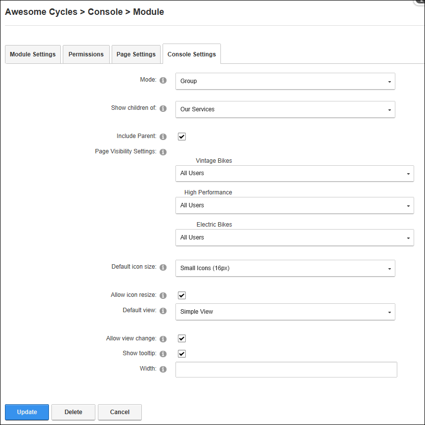

Displaying Groups using the Console
How to display a social group on the Console module.
-
- Select the Console Settings tab.
- At Mode, select Group.
- At Show Children Of, select from these options:
- Leave this field blank to display all child pages for the current page. This is the default setting.
- Select a page display all child pages for that page.
- At Include Parent, mark
 the check box to include the parent page selected in the previous step at the top of the pages list - OR - unmark
the check box to include the parent page selected in the previous step at the top of the pages list - OR - unmark  the check box to only include the child pages of the selected page in the list.
the check box to only include the child pages of the selected page in the list.
- At Page Visibility Settings, select the roles that are permitted to view each child page.
- At Default Icon Size, select from the following:
- Small Icons (16 px): Select to display a 16 pixel icons. The icon used will either be the default icon provided with the Console module or the "Icon" image set for the page. See "Advanced Settings for New Pages" or See "Advanced Settings for Existing Pages". This is the default setting.
- Large Icons (32 px): Select to display a 32 pixel icons. The icon used will either be the default icon provided with the Console module or the "Large Icon" image set for the page. See "Advanced Settings for New Pages" or See "Advanced Settings for Existing Pages"
- No Icons: Select if you don't want to display an icon on the pages list. Skip the next step.
- At Allow Icon Resize, select from these options:
- Mark the check box to displays a drop down list at the top of the module that allows users to change the size of the icon. This is the default setting.
- Unmark the check box to only display the default icon.
- At Default View, select from these options:
- Simple View: Select to display the page name. This is the default setting.
- Detailed View: Select to display the page name and the page description for each item.
- At Allow View Change, select from these options:
- Mark the check box to display a drop down list at the top of the module that allows users to switch between simple and detailed views. This is the default setting.
- Unmark the check box to only display the default view.
- At Show Tooltip, select from these options:
- Mark the check box to display the page description as a tool tip when a user hovers over the page name in Simple View. This is the default setting.
- Unmark the check box to hide the tool tip and hide the page description in Simple View.
- In the Width text box, select from these options:
- Enter a pixel width to set the width of this module. For example, enter 400px to display 2 columns of icons in the content pane.
- Leave this field blank to allow the icons to expand horizontally. This is the default setting.

-